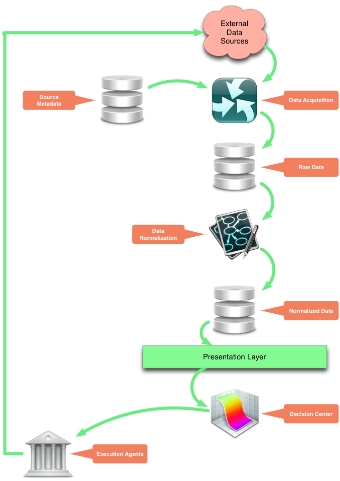

So we can store big data sets
and quickly locate the tiniest details
We use the same ideas the make the Internet possible.
Reliably access Autonomy resources from anywhere in the world.
Acquire data for the whole firm not just for individuals.
Common data storage enables grid computation
We have collected and stored thousands of data series and working through our entire daily universe.
Access only takes a link:
http://fennel.knyc.acr.lab:5555/tx/market-data-indexes